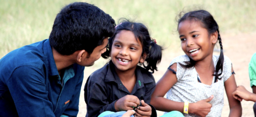
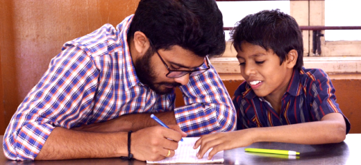
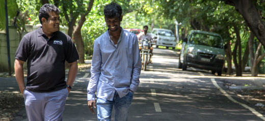
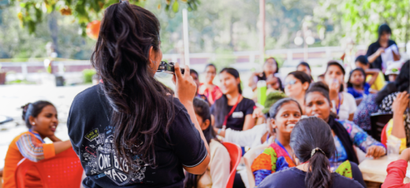
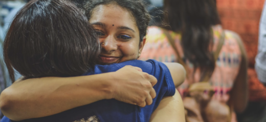
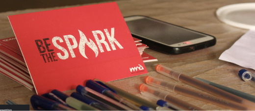

Following are the volunteering roles at Make A Difference:
Foundational Skill Volunteer

You will work towards enriching their learning experience, motivating them to follow their dreams,
supporting them in gaining life skills through the year by the end of which you will create lifelong
bonds with the small group of children you mentor.
Have you ever felt that education is much more than subject knowledge? Have you ever wanted to be a teacher? What are you waiting for? Go ahead and apply!
Have you ever felt that education is much more than subject knowledge? Have you ever wanted to be a teacher? What are you waiting for? Go ahead and apply!
About :
This programme caters to the youngest age group of children we work with which is between the age of 10 to 13 years. The Programme focuses on imparting functional Life-skills, developmental skills, basic literacy and numeracy as well as providing children home-work and exam support.Roles and responsibilities :
- Take weekly classes to deliver session on basic literacy, numeracy, life-skills and development skills
- Track child progress on a regular basis
- Attend skill building training once a month
- Give feedback to the module design team on a consistent basis
- Participate in community projects in city (Eg: Fundraising, Dream camp, creating awareness etc)
What is in it for you?
- Improve your understanding of building the right foundation for the child
- Learn to teach and facilitate online
- Learn how to engage and enable children
- Develop your team building skills
Academic Support Volunteer

Here is an opportunity to be the teacher you always wanted as a child. Be the teacher who makes every
hour
we get with children an amazing experience for them. And be the epitome of care and support.
Have you ever wanted to be someone like that? What are you waiting for? Go ahead and apply!
Have you ever wanted to be someone like that? What are you waiting for? Go ahead and apply!
About :
This programme caters to providing academic support in a specific subject from the school syllabus to children/youth on a weekly basis. You'll be assigned a group/batch of 3-6 children/youth. You can either be an academic support volunteers for:- Grade 5 to Grade 10: You will teach either english, maths or science
- Grade 11 & Grade 12: You will teach a subject from science, commerce or arts stream based on the needs of the city.
Roles and responsibilities :
- Take weekly classes in subject support as per your preference
- Design and Plan interactive learning experiences to help the child/youth learn based on their learning styles.
- Attend skill building training which will be conducted once a month
- Participate in community projects in city (Eg: Fundraising, Dream camp, creating awareness etc)
What is in it for you?
- Lean how to enable a child/youth to stay enthusiastic about academics
- Learn how to manage a high performing classroom
- Learn how to design and facilitate learning experiences for children and youth
- Develop your team building skills
Wingman

As a wingman, you will be the guiding force behind the future of the youth. You will enable a
collaborative and positive ecosystem around the youth by engaging various stakeholders! Be an enabler
and
guardian of life choices to youth.
Do you want to work closely with a youth and impact their future? If yes, then apply now!
Do you want to work closely with a youth and impact their future? If yes, then apply now!
About :
A wingman is a mentor who provides one on one support to the youth in his quest for moving forward in life. The youth assigned to you will be of the age group 18-28 years. You can choose to be a wingman either for an 11th or 12th grader or for undergraduates and graduates. As a wingman, you are the guiding force behind the future of the youth. Wingman enables a collaborative and positive ecosystem around the youth by engaging various stakeholders.Roles and responsibilities :
- Supporting the youth online by providing mentoring, life skill and crisis support
- Attending trainings to upskill
- Engage with various stakeholders
- Meaningfully participating in self-support group meeting and aftercare circles
- Participate in community projects in city (Eg: Fundraising, Dream camp, creating awareness etc)
What is in it for you?
- Enhanced analytical and critical thinking
- Innovation and thinking tools
- Being responsible and building good understanding of the development of youth and communities
- Build competency to deal with real life crisis/emergency situations
- Improved communication skills
Fundraising Volunteer

As a fundraising volunteer, you will become a change agent in your community by giving a chance to
people
in your community to join the movement for vulnerable children. Are you curious about how you can
activate
your community to support children in need of care and protection?
If yes, then apply now!
If yes, then apply now!
About :
Fundraising is the lifeline for any nonprofit to sustainably deliver the programmes on ground. Even though all our volunteers are expected to participate in community fundraising and help educate their communities about the cause, as a fundraising volunteer, you will help take this to the next level. You will be part of a team that approaches and mobilizes different entities such as corporations, individuals and communities at large to support our cause.Roles and responsibilities :
- Plan and execute various campaigns in MAD that focus on the work we do to spread awareness and raise funds.
- Mobilise communities inside and outside of MAD to meet the needs of the organisation
- Inspire volunteers in your cities to participate in Community Fundraising
- Attend the weekly city Fundraising meetings
- Attend trainings to keep yourself upskilled
- Be an active volunteer, to go on ground to teach and support other verticals with their roles
What is in it for you?
- Build your personal network of like minded people
- Learn team building and mobilisation
- Project management and people management skills
- Pitching, negotiating and presentation skills
- Looks great on any resume! *it really is a conversation starter*
Campaigns Volunteer
If you are interested in being the voice of CNCP (children in need of care and protection) by
campaigning
the right way for them, this role is for you. As a Campaigns volunteer, you will be the voice of MAD to
the outside world. You will be the enabler of human connectedness inside and outside of MAD. You will
get
to build and mobilise communities.
About :
Campaigns volunteers are a creative team that represents MAD to all our stakeholders through innovative, cutting edge campaigns and collateral. Volunteers deliver creative content and become the voice of children and the organisation and enable a vast outreach and improve our ability to communicate to different audiences through powerful and high-quality communications such as videos, pictures, posters and write-ups.Roles and responsibilities :
- Participating in Campaigns team meetings and Zero Hour
- Creating inspiring content
- Plan and execute campaigns for raising awareness and fundraising events
- Mobilizing the communities and maintaining engagements
- Attending training to upskill yourself
- Attend Shelter Circles, City Circles & support classes
- Network and take ownership of communications at a city level (internal and external)
- Participate in community projects in city (Eg: Fundraising, Dream camp, creating awareness etc)
What is in it for you?
- Be a part of revolutionary campaigns that advocates for a better world for CNCP
- Be a part of creating life-changing experiences through campaigns for CNCP
- Up your creative confidence
- Be a part of an inclusive community of thinkers and artists who are born to make a difference
- Learn team-building, networking and mobilisation skills
- Project management and people management skills
Human Capital Volunteer

As a human capital volunteer, you will enable the city to recruit volunteers and keep them motivated and
engaged throughout the year. If you are someone who loves meeting new people and building meaningful
relationships. If yes, apply for this role!
About :
MAD wouldn’t exist without all the passionate humans we have. HC volunteers are individuals who are passionate and excited to support volunteers to Make a Difference. They along with the HC fellow team ensure every volunteer in their city feels heard, seen, and supported from time to time to be able to deliver their best care to the child/ youth. They form an integral part in making sure the right cultures and values are upheld, while not only children but all the volunteers have an enriching experience with MAD.Roles and responsibilities :
- Support your City HC fellow in all projects (Sourcing, Recruitment, Induction, Volunteer Management and engagement and all city event mobilisation)
- Support the city in finding the right kind of people and recruiting them
- Ensure volunteers have a positive experience throughout the year and they feel supported and cared for
- Attend all the meetings with the Human Capital team of the city
- Go on ground and support other verticals by substituting or taking classes.
- Attend and participate in vertical training & city events
- Participate in community projects in city (Eg: Fundraising, Dream camp, creating awareness etc)
What is in it for you?
- Learn the skill of team building
- People managements skills
- Creating experiences for large scale teams
- Supporting teams to learn and grow
Finance Volunteer

As a finance volunteer, you will become a change agent in your community by giving a chance to people in
your community to join the movement for vulnerable children.
Are you curious about how you can activate your community to support children in need of care and protection? If yes, then apply now!
Are you curious about how you can activate your community to support children in need of care and protection? If yes, then apply now!
About :
A finance volunteer will bring in stability, visibility and financing perspective to the community and increase efficiency and effectiveness for all finance projects like compliance, donation and event management.Roles and responsibilities :
- Ensure all communities under MAD are compliant and ensure MAD is risk-free
- Work with the community fundraisers to manage donations received from the community
- Work with the finance fellow of the city and support with expense & bills management
- Be the Logistics point of contact for the community at all points of time
- Safeguard and be the custodian of all MAD assets and resources in the community
- Attend and participate in vertical training & city events
- Be an active volunteer, to teach online and support other verticals with their roles and projects
What is in it for you?
- Learn about the laws and regulations that apply for non profits
- How Expenses and Incomes work in a non profit organization
- Real-Life Operations and Money Management skills
- Project Management and People Management skills
- Learn Team-building and Mobilization
- Pick up and practise Negotiation and Presentation skills
- Learn Event, Vendor and inventory Management
- Efficiently manage limited resources
- Build your personal network of like-minded people